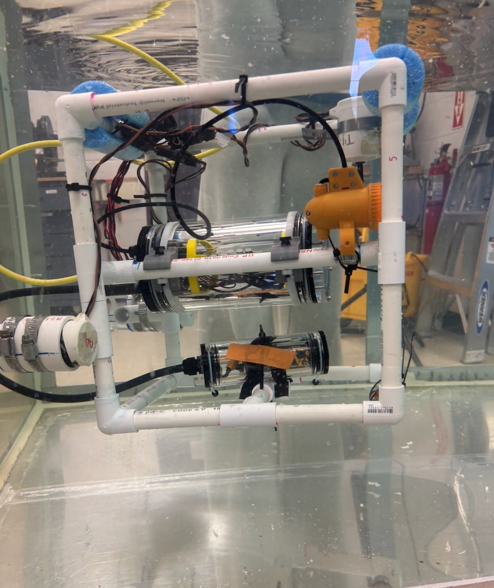
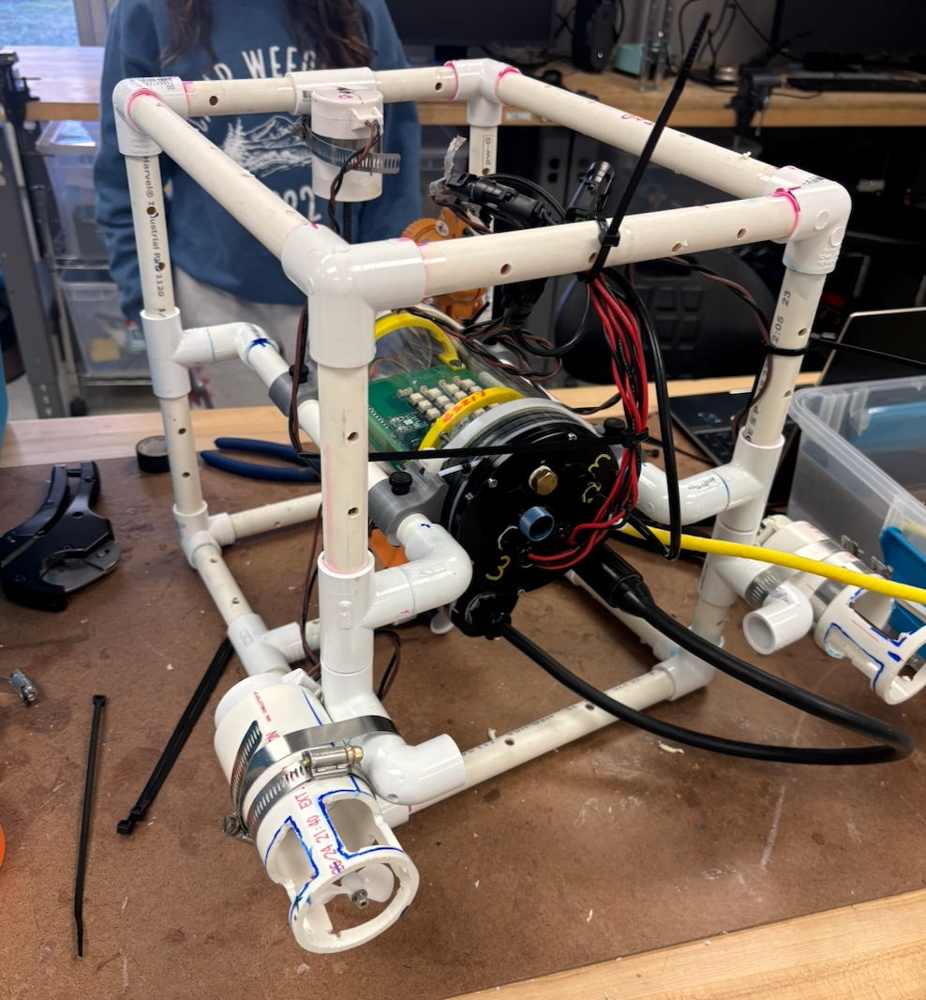
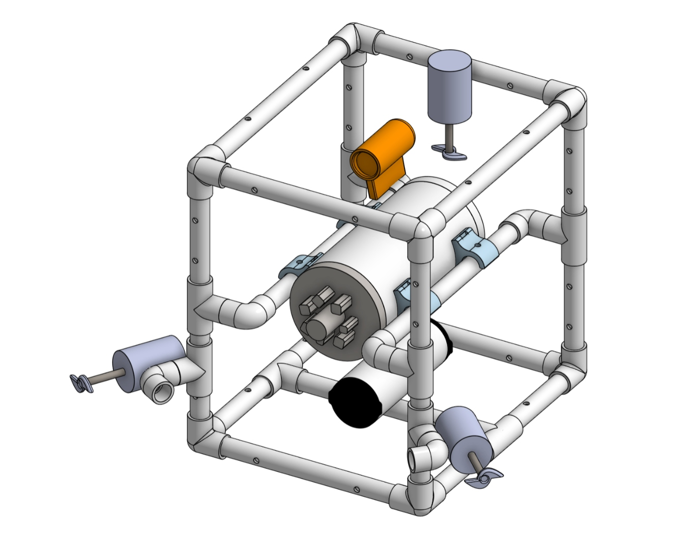

A remotely operated underwater vehicle prototype designed to inspect offshore wind farm risers in Lake
Michigan while staying stable, maneuverable, and neutrally buoyant.
Prototype an underwater inspection robot for difficult lake conditions.
I was tasked with creating a prototype ROV to inspect offshore wind farm risers in Lake Michigan. The
project began with CAD design, then moved into manufacturing and rapid prototyping to assemble the
physical vehicle.
A major part of the project was learning to analyze buoyancy and mass properties so the ROV could remain
stable, maneuverable, and neutrally buoyant while operating in unpredictable lake conditions.
02 · Technical approach
Balance mechanical structure, buoyancy, control, and inspection usability.
Problem
Identify cracks, growths, and damage on wind farm risers while maintaining stability in unpredictable
Lake Michigan conditions.
Build strategy
Use CAD for the initial design, 3D printing and soldering for prototype assembly, and Arduino-based
electronics for vehicle control.
03 · Photos + CAD
From CAD model to tank-tested prototype.

Prototype ROV during underwater tank testing.

Bench assembly showing the PVC frame, wiring, electronics, and thruster layout.

CAD model used to plan the ROV frame, thruster placement, and internal component layout.
04 · Demo video
Tank test footage of the ROV prototype.
Short tank-test video showing the underwater ROV prototype during operation.05 · Results
The prototype identified most target damage while maintaining buoyancy goals.
Outcome
The ROV correctly identified 80% of damage while staying stable and neutrally buoyant during testing.
Learning
This project taught me best practices for working with a team that included people from different
backgrounds, majors, and experience levels.
06 · Reports
Final presentation and report.
Final presentation
Google Slides presentation for the Underwater ROV project.